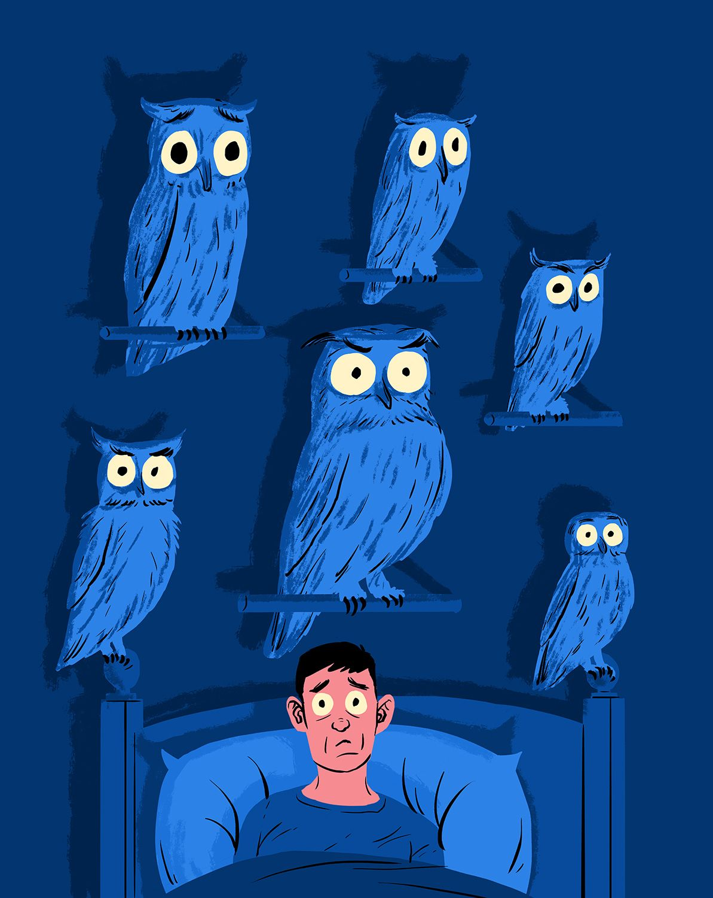
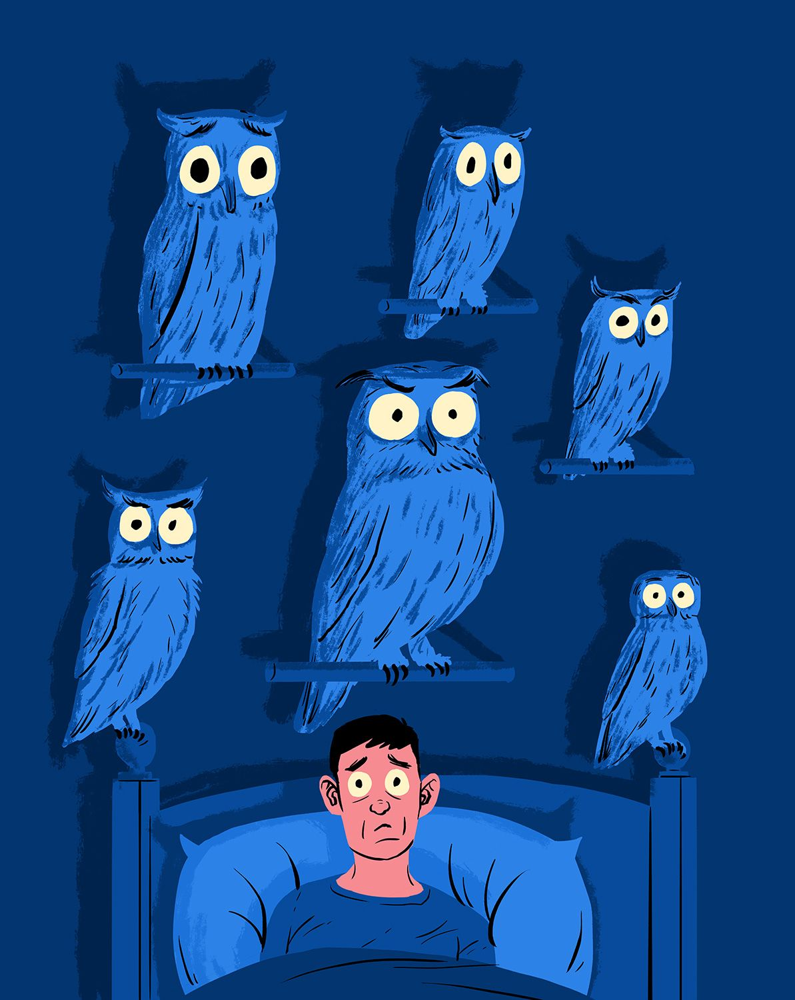

Artisti
Adrian Johnson
Emily Robertson
Hattie Clark
Icinori
Jean Jullien
Martina Paukova
Michelle Thompso
Paul Blow
Sanna Mander
La selezione degli artisti per la mostra "Visioni Illustrate" è stata un processo meticoloso e ispirato, volto a rappresentare la vasta gamma di stili e voci nell'illustrazione contemporanea.
Un comitato di esperti ha valutato centinaia di candidature provenienti da tutto il mondo, con l'obiettivo di scegliere opere che non solo dimostrassero eccellenza tecnica, ma anche originalità concettuale e capacità di comunicare temi profondi o storie coinvolgenti.
L'attenzione è stata rivolta alla diversità di tecniche, dalla tradizionale alla digitale, e alla varietà di espressioni culturali, assicurando che la mostra offrisse uno spettro completo delle tendenze attuali e delle innovazioni nell'arte dell'illustrazione.


 
